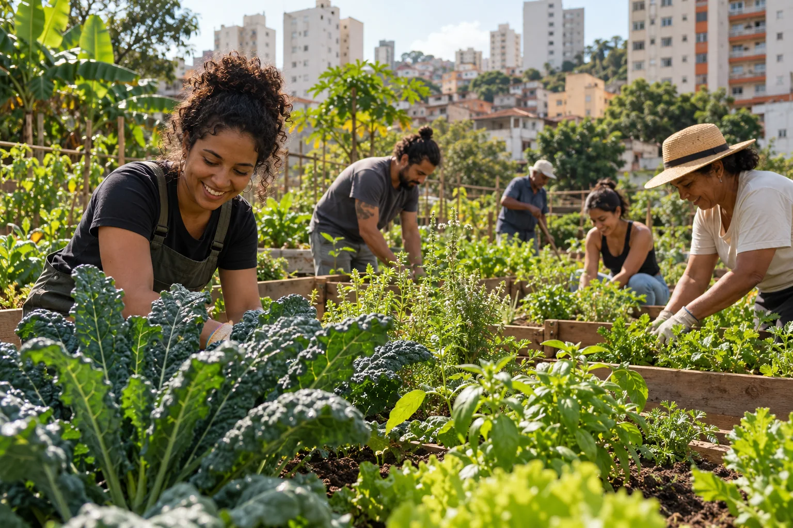

DIRETÓRIO DE HORTAS
Encontre uma horta. Descubra o que está crescendo.
Pesquise por alimento, nome, bairro ou cidade e veja em que etapa está cada plantio.
Cadastrar uma horta
BUSCA COM FILTROS
O que você procura?
Combine os filtros ou pesquise pelo nome do alimento. A lista atualiza com os resultados disponíveis.
Preparando hortas…
Sua horta não aparece? Cadastre ou anuncie um plantio